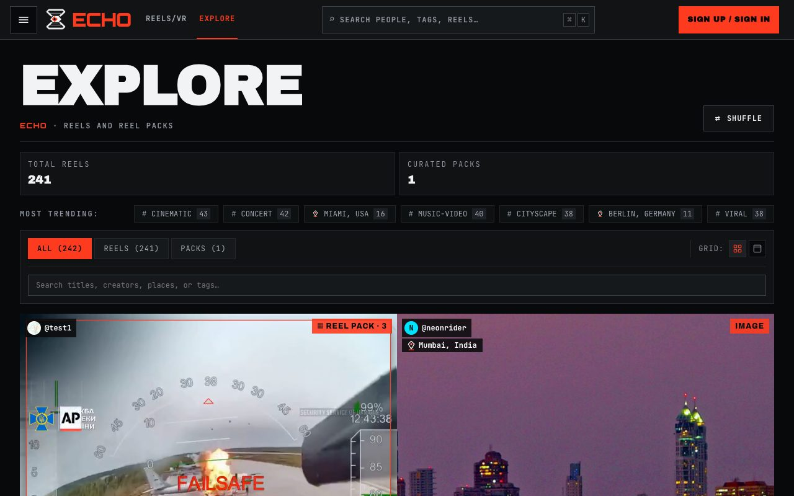
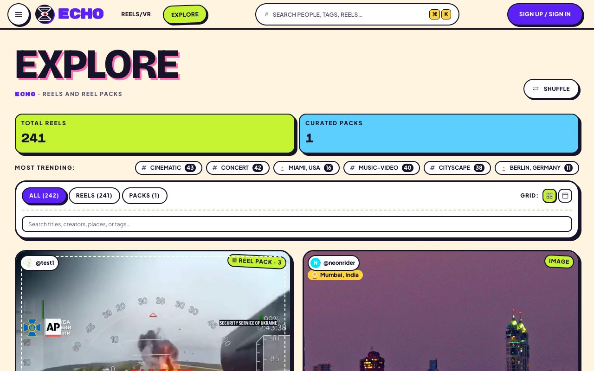
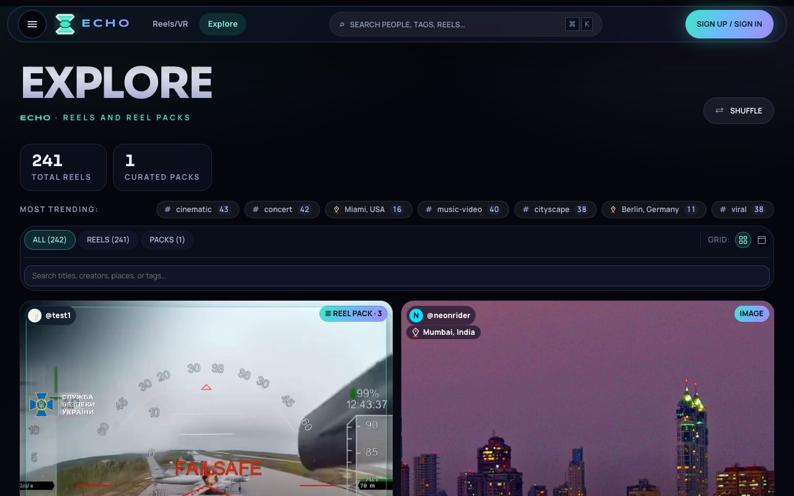
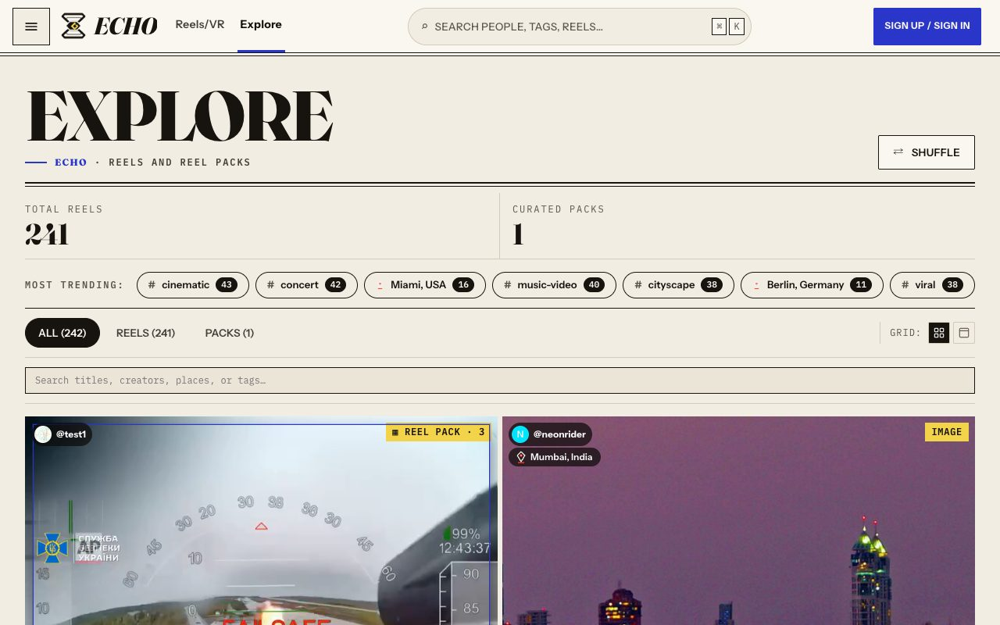
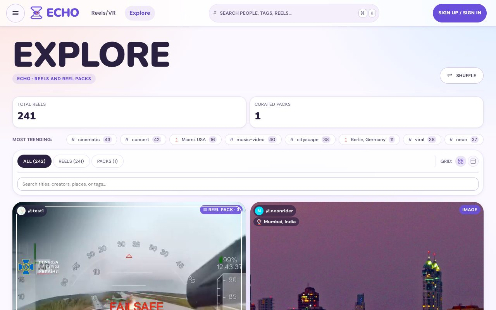

Current palette-test · reference
Sign upShuffleMuted textLink
Near-black brutalist: condensed caps, hairline rules, square corners, one vermilion accent.
Archivo · Source Sans 3 · JetBrains Mono
Four full restyles of the web app, each on its own branch, against the current look. Unlike the palette test, these change type, shape and spacing as well as colour. Every screenshot was retaken in one run with the same viewport, wait and API data, so the differences below are the designs.
ui/ were off-limits, so they keep the old look inside every design.npm test (node tests and vitest) and vite build in their worktree.Near-black brutalist: condensed caps, hairline rules, square corners, one vermilion accent.
Light and loud: cream page, thick ink outlines, hard offset shadows, rounded sticker cards in lime, sky, pink and sun around a violet accent.
Dark cinema: blue-black ground, glass panels, a teal-to-violet light-beam gradient on primary actions, softer corners.
Editorial print: warm paper, a serif display face, cobalt links and proof-yellow marks. The reels area flips to dark ink with a yellow accent.
Soft and rounded: lilac-white page, pill buttons, a violet-to-plum gradient, pastel tints. The only design that recolours the logo.





| Design | Text | Secondary | Faint | Accent | Label on accent |
|---|---|---|---|---|---|
| Current | 17.9 | 6.6 | 3.7 | 5.6 | 5.6 |
| A · Sticker Pop | 16.5 | 7.0 | 5.4 | 6.5 | 7.0 |
| B · Aurora Theatre | 18.0 | 7.6 | 5.8 | 12.9 | 11.5 |
| C · Paper & Ink | 15.7 | 6.3 | 5.7 | 7.3 | 8.0 |
| C · reels area (dark) | 17.5 | 7.2 | 5.9 | 13.3 | 12.4 |
| D · Daydream | 14.4 | 6.2 | 5.3 | 5.3 | 5.6 |
| D · night areas | 16.3 | 7.3 | 5.0 | 8.4 | 8.2 |
Tokens: --sx-ink, --sx-ink-3, --sx-ink-muted, --sx-accent against --sx-bg, and --sx-on-accent against --sx-accent. Every redesign lifts the faint text that fails today. Gradients, photos behind text and the hard-coded colours left in global.css are not in these figures.
| Design | Files | Lines | Hex colours in CSS | Colour functions | Touches outside CSS |
|---|---|---|---|---|---|
| A · Sticker Pop | 6 | +1428 −349 | 49 → 4 | 47 → 0 | index.html fonts, main.jsx import |
| B · Aurora Theatre | 6 | +1288 −256 | 49 → 49 | 47 → 44 | index.html fonts, main.jsx import; global.css only font and colour swaps |
| C · Paper & Ink | 6 | +895 −296 | 49 → 26 | 47 → 34 | index.html fonts, main.jsx import; logo re-inked by CSS |
| D · Daydream | 9 | +1422 −555 | 49 → 39 | 47 → 33 | echoGlass.js, echo-glass.svg, AnimatedEchoLogo.jsx: new logo colours |
ui/ was off-limits, so the player chrome and the WebXR panels keep the current vermilion look inside each design.design:design-system and design:accessibility-review are not installed, so the design-system and accessibility checks were done by hand or with ui-ux-pro-max.theme-cinematic.css layered on top.ui/assets/vr_ui_canvas.js:198), which stays vermilion while the web logo turns violet and pink.It stays dark, so it sits best next to the reels player and VR that keep the current look. It has the highest contrast and the smallest change to global.css.
The smallest diff of the four, and the dark reels area means the player no longer clashes. The CSS-recoloured logo is the one fragile part.
It removes almost all hard-coded colour, but the light, loud look is the furthest from the VR experience.
The logo change spreads into JavaScript and needs a matching change in the VR canvas before it can ship.
.claude/worktrees.| Design | Branch | Commit | Worktree | Port used here |
|---|---|---|---|---|
| Current | palette-test | 3861f7b | . | 5181 |
| A · Sticker Pop | redesign/sticker-pop | e37cd61 | agent-ac3ad32c06993fe5f | 5182 |
| B · Aurora Theatre | redesign/dark-cinematic | ca0df93 | agent-a5228f560722ad7be | 5183 |
| C · Paper & Ink | redesign/editorial-ink | 1e11447 | agent-ac54579df16357dcd | 5184 |
| D · Daydream | redesign/soft-dreamy | 841ac92 | agent-a5cd955d38c4d4020 | 5185 |
In a worktree's web folder, run npx vite --port 5182 --strictPort with the API on :8000. On Node 18, add NODE_OPTIONS=--dns-result-order=ipv4first so the proxy reaches the API on 127.0.0.1.